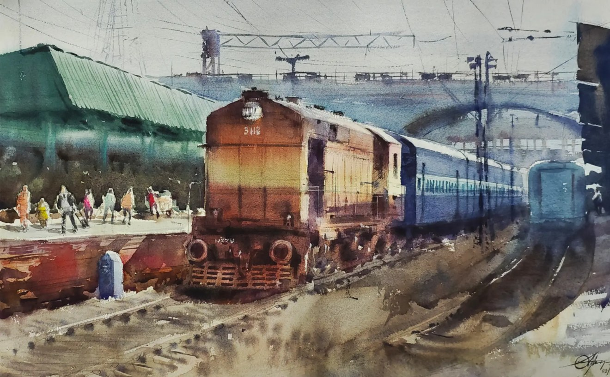
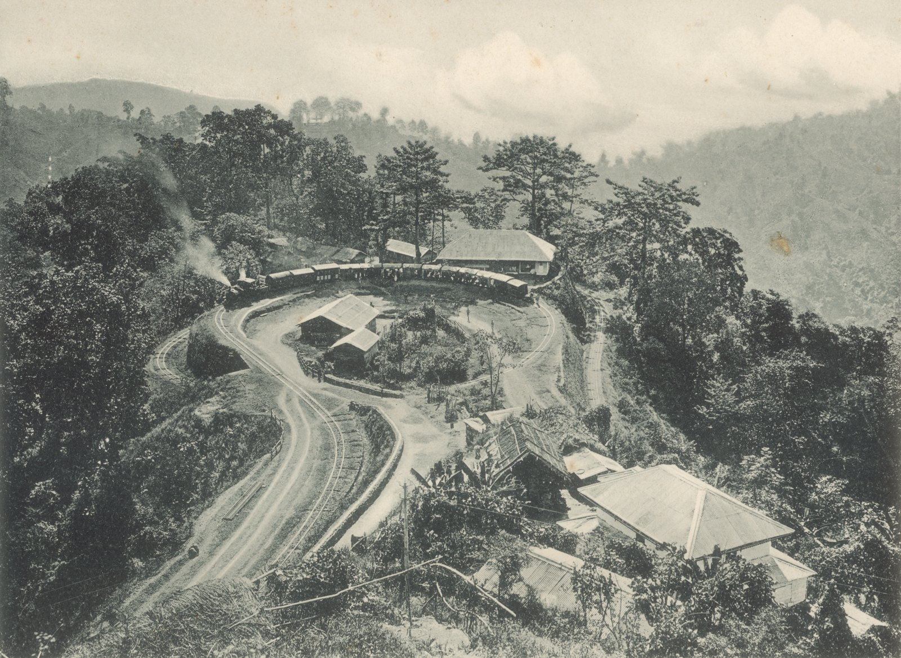

Indian Railways: Life on the Line
Road map
Lesson of 55 minutes, timed for 52 minutes. 3 lessons.
-
Lesson 1 · A film on an Indian train
52 min
Anticipate, watch, then talk about the train and the country.
- 8 min · Why India? and anticipation
- 30 min · The film : before, while, after watching
- 14 min · Speaking : train and country
- Written record. One fact about trains in India.
- Participation. everyone speaks at least once: one sentence about what we have seen.
- Homework for next lesson. Reread the train words.
Stopping point. End of this lesson. Next time: the reading, Indian Railways.
Emergency exit · 8 min. If time runs short at this stopping point, we condense: we dictate a short written record (one fact about trains in India); a round of the class, one sentence each (one sentence about what we have seen), so that everyone has spoken at least once; the homework (relire les mots du train) is written on the board.
-
Lesson 2 · Reading: Indian Railways
52 min
Read the texts, check comprehension, compare British trains and Indian trains.
- 30 min · Reading : textes, compréhension, chiffres
- 15 min · Comparing British trains and Indian trains
- 7 min · Written record : trois phrases de comparaison
- Written record. Une comparaison courte (faster than / more crowded than).
- Participation. everyone speaks at least once: one sentence about one of the two texts.
- Homework for next lesson. Finish the three comparison sentences.
Stopping point. End of this lesson. Next time: the grammar, the exchange and the writing.
Emergency exit · 8 min. If time runs short at this stopping point, we condense: we dictate a short written record (a short comparison (faster than / more crowded than)); a round of the class, one sentence each (one sentence about one of the two texts), so that everyone has spoken at least once; the homework (finish the three comparison sentences) is written on the board.
-
Lesson 3 · Grammar, exchange and writing
52 min
Tell a journey in the simple past, play a short dialogue, start the travel-journal page.
- 18 min · Grammar : simple past and comparatives
- 16 min · A short exchange
- 12 min · Lead into Writing
- 6 min · Written record and homework instruction
- Written record. A sentence in the preterite about a journey.
- Participation. everyone speaks at least once: one line from the exchange.
- Homework for next lesson. Finish the travel-notebook page.
Stopping point. End of these lessons. Assessments A and B, already on the page, can be done if a fourth hour is available, or at home for the written task.
Emergency exit · 8 min. If time runs short at this stopping point, we condense: we dictate a short written record (a sentence in the preterite about a journey); a round of the class, one sentence each (one line from the exchange), so that everyone has spoken at least once; the homework (finish the travel-notebook page) is written on the board.
Extra lessonsB1 · adapted3 lessons of 52 minutes
Problem. What can a train journey tell you about India?
Why India? A British railway heritage
In 1853, India was under British rule.
The first passenger train ran on 16 April 1853, from Bombay (now Mumbai) to Thane.
British private companies built the first lines.
Why? To carry cotton to the port, and then by ship to factories in England. And to move soldiers quickly.
Today, Indian Railways belongs to the Government of India.
India is a big English-speaking country of the Commonwealth: English is used there with Hindi in government, business and schools. Its railway is one of the busiest in the world. You will compare a crowded local train with a luxury train, watch the trailer of a famous film shot on an Indian train, and book a berth for a night journey.
You will learn to:
- understand facts and figures about a railway, and say big numbers
- tell a travel experience in the simple past
- compare two trains or two countries: longer than, more comfortable than, the busiest
- book a berth and ask for information at an Indian station
- write a page for a travel blog
Programme. Axis: travel and mobility, discovering an English-speaking country.
Links with what you know. In Leaving by train you bought tickets, read the departure board and made polite requests. In Buses and the Tube lessons you travelled around London. Now you take the train in another English-speaking country.



Step 1
Recap check
Three minutes, marked. What do you remember from Leaving by train?
1. A ticket to go to Brighton and come back the same day is...
2. Your train is « delayed ». It means...
3. The big screen with the trains, times and platforms is...
Answer key
- a return
- it is late
- the departure board
Step 2
A film on an Indian train
The Darjeeling Limited, Wes Anderson, 2007, official trailer (Searchlight Pictures, 2 minutes 23 seconds). French title: « À bord du Darjeeling Limited ».
1. Before watching: predict
Read the title: The Darjeeling Limited. Darjeeling is a town in the mountains of India, famous for its tea. A « limited » is a fast train with few stops.
Now imagine this picture from the film: three men in grey suits stand in the narrow corridor of a train. The walls are painted bright blue. One man has white bandages all around his head. Outside the window, the land is dry and yellow.
- Who are the three men? Friends, brothers, colleagues?
- Where are they going, and why?
- Is it a sad film or a funny film? Why do you think so?
- I think they are... because...
- Maybe they are travelling to...
- It looks funny / strange / sad because...
Possible answers
They are three American brothers. They have not spoken to each other for a year, and they travel across India by train to become close again. It is a comedy, with sad moments: the colours, the bandages and the strange situations are funny.
2. While watching
Watch the trailer once without stopping, then answer. Watch a second time to check.
Open the trailer on YouTube if it does not play here.
1. How many brothers travel together in the trailer?
2. What is unusual about the face of one brother?
3. What colour is the inside of the train?
4. What landscape do you see outside the train?
Answer key
- three. Three brothers: Francis, Peter and Jack, played by Owen Wilson, Adrien Brody and Jason Schwartzman.
- His face is covered in bandages.. Francis has bandages on his head and face, after an accident.
- mostly blue. The corridors and compartments are painted blue, with bright patterns.
- dry, sandy country, almost a desert. The brothers cross a dry, sandy landscape. The film was shot mainly in Rajasthan.
3. After watching: train and country
- In the trailer, the train is a sleeper train with compartments. Which class from Text A is it like: unreserved, sleeper class or AC first class? Why?
- Is the train in the film more like a Mumbai local train or more like the Maharajas' Express? Give two reasons.
- It looks like... because the brothers have...
- It is more comfortable than... / less crowded than...
- On a train, you meet... you see...
Possible answers
- It is like AC first class: the brothers have their own compartment, with beds, and they are calm and comfortable. It is not like an unreserved carriage: nobody is standing.
- It is more like the Maharajas' Express: it is calm, beautiful and colourful, and it is not crowded. But it is less luxurious: the compartments are small and simple. The Darjeeling Limited is an invented name; the real Darjeeling railway is the little mountain train in the photograph at the top of the page.
Step 3


Then and now: in 1928, a travel poster invited passengers to visit India by train. Today, local trains still run through a busy station in Mumbai.

Reading: Indian Railways
1. Train words: match
Tap a word on the left, then its meaning on the right.
Answer key
- a berth: a bed on a train
- a sleeper train: a train with beds for a night journey
- air-conditioned (AC): with cold air inside when it is hot
- a commuter: a person who travels to work every day
- crowded: with too many people
- a carriage: one of the parts of a train where passengers travel
Text A. Life on the line
India has one of the biggest railway networks in the world: 69,439 kilometres of lines and 7,469 stations (March 2025).
In one year (April 2024 to March 2025), passengers made about 7.3 billion journeys.
The first passenger train in India left Bombay (now Mumbai) on 16 April 1853. It went to Thane, 34 kilometres away. Three steam locomotives pulled fourteen carriages.
On long journeys, many people sleep on the train. In sleeper class, there is no air conditioning, only fans. In AC three tier, there is air conditioning and you get sheets and a blanket.
Text B. Two trains, two worlds
The local train. In Mumbai, about nine million people take the local trains on a normal weekday (2026). In the rush hour, a train for 1,700 people can carry about 4,500. It is very crowded.
The luxury train. The Maharajas' Express started in 2010. It carries only eighty-eight guests. It has cabins, suites and restaurants. It won the prize « World's Leading Luxury Train » seven years in a row.
2. Check that you understand
1. Where did the first passenger train in India leave from?
2. When did it leave?
3. In sleeper class...
4. How many people can a nine-carriage Mumbai train carry in the rush hour?
5. How many guests can travel on the Maharajas' Express?
Answer key
- Bori Bunder, in Bombay. Bori Bunder station, in Bombay, now Mumbai.
- 16 April 1853. On 16 April 1853.
- there are only fans and you bring your own sheets. No air conditioning in sleeper class: fans, open windows, your own sheets.
- about 4,500. About 4,500, but it was built for about 1,700.
- eighty-eight. Eighty-eight guests. Twenty-three is the number of coaches.
3. True or false?
1. Passengers made more than seven billion journeys on Indian Railways in one year.
2. The first train in India went from Mumbai to Delhi.
Answer key
- True. About 7.3 billion journeys between April 2024 and March 2025.
- False. It went from Bori Bunder, in Bombay, to Thane, 34 kilometres away.
Step 4
Comparing: British trains and Indian trains
Complete the Indian column with figures from Text A. Then check.
1. Length of the network (2025)
Great Britain: 15,747 km
India: km
2. Number of stations (2025)
Great Britain: 2,589
India:
3. Passenger journeys in one year (April 2024 to March 2025)
Great Britain: about 1.7 billion
India: billion
Answer key
- 69,439 km
- 7,469
- about 7.3 billion
British figures: Department for Transport, Rail Trends 2025. The Stockton and Darlington Railway opened in 1825.
Now write three sentences
Use the grid. Write two sentences with a comparative and one with a superlative.
- The Indian network is ... than ...
- India has more ... than ...
- Indian Railways is one of the ... in the world.
Possible answers
The Indian network is more than four times longer than the British network. India has nearly three times more stations than Great Britain. Indian trains carry more passengers than British trains: about 7.3 billion journeys against 1.7 billion. Britain's railway is older than India's: it started in 1825. Indian Railways is one of the busiest railways in the world.
Step 5
Grammar
1. The simple past: telling a journey
Regular verbs: + -ed. travel, travelled; book, booked; arrive, arrived; stop, stopped.
Irregular verbs: learn them. be, was / were; go, went; take, took; buy, bought; leave, left; sleep, slept; see, saw; eat, ate; sell, sold; wake, woke.
Negative: I didn't sleep well. (didn't + base verb)
Question: Did you book a berth? Yes, I did. / No, I didn't.
Time words: yesterday, last summer, two years ago, in 2025, then, after that, finally.
Practice
1. Last summer, I ___ the night train to Goa.
2. We ___ in Mumbai at six in the morning.
3. The train ___ very crowded.
4. I ___ sleep well on the upper berth.
Answer key
- took
- arrived
- was
- didn't
Ravi's journey: put the verbs in the simple past
Word bank (tap a word to fill the box you are in):
Last year Ravi (go) to Delhi by train. He (buy) his ticket online. The train (leave) at eight. Ravi (sleep) well. It (be) a good journey.
Answer key
- went
- bought
- left
- slept
- was
2. Comparing: comparatives and superlatives
Short adjectives: long, longer than, the longest; big, bigger than, the biggest; busy, busier than, the busiest.
Long adjectives: comfortable, more comfortable than, the most comfortable; expensive, less expensive than.
Irregular: good, better, the best; bad, worse, the worst; far, further, the furthest.
Equality: The train is as fast as the bus. It is not as comfortable as a hotel.
Practice
1. The Indian network is ___ the British network.
2. AC three tier is ___ sleeper class.
3. The Maharajas' Express is ___ train in India.
4. Mumbai local trains are ___ trains I know.
Answer key
- longer than
- more comfortable than
- the most expensive
- the busiest
Step 6
A short exchange
Tom, a young British traveller, is in India. Listen to the three scenes. Tap a line to hear it again.
Voices: Tom speaks British English. Meera and the clerk speak Indian English.
Scene 1. At the reservation counter
Scene 2. On the platform
Scene 3. On board
Original dialogue written for this sequence. The train, the times and the people are imaginary.
Did you understand?
1. Which class does Tom choose?
2. Which berth does he get?
3. Why is Tom on the wrong platform?
Answer key
- AC three tier. He chooses AC three tier: air conditioning, sheets and a blanket.
- an upper berth. The lower berths are all booked, so he gets an upper berth.
- They changed the platform.. The train leaves from platform five tonight: they changed it.
Role play
Work in pairs. Read your card, prepare for five minutes, then act. Swap roles for the next scene.
Scene A. Booking a berth
You are a tourist at the reservation counter. You want to go to Jaipur tonight. Ask for a berth, ask the difference between the classes, choose one, ask the price and the time of the train.
You work at the reservation counter. There are berths in sleeper class (cheaper, fans, no sheets) and in AC three tier (air conditioning, sheets). Only upper berths are left. The train leaves at 21.40 from platform 3. The journey takes about five hours. Invent a price.
Scene B. On the wrong platform
Your train to Kolkata leaves in ten minutes. You are on platform 2, but nobody is waiting. Ask another passenger politely.
You are a passenger. The Kolkata train leaves from platform 7 today: they changed the platform. Explain, show the board and offer to help.
Useful phrases
- I'd like to book a berth to..., please.
- What's the difference between sleeper class and AC three tier?
- Is there a lower berth? How much is it? What time does it leave?
- Excuse me, is this the right platform for...?
- I'm afraid... / They changed the platform.
- Last year I went to... by... It was... than...
Model dialogues
Scene A. A: Good evening. I'd like to book a berth on the train to Jaipur tonight, please. B: Sleeper class or AC three tier? A: What's the difference? B: Sleeper class is cheaper, but there are only fans and no sheets. AC three tier has air conditioning and sheets. A: AC three tier, please. Is there a lower berth? B: I'm afraid only upper berths are left. A: That's fine. How much is it, and what time does it leave? B: It leaves at 21.40 from platform 3, and it takes about five hours.
Scene B. A: Excuse me, is this the right platform for the Kolkata train? B: No, they changed the platform. It leaves from platform 7 today. Look, it's on the board. A: Oh no, it leaves in ten minutes! B: Don't worry, come with me, it's not far. A: Thank you so much.
Step 7

Writing: a page for your travel blog
Write a post for your travel blog about a train journey (about 80 words). It can be a real journey or an imaginary journey in India. Say where you went, when, which train and class you took, what you saw and how you felt. Compare it with another journey.
Model
Checklist
Write here
0 words
Your text stays on this device. Copy it before you close the page.
What is expected
Simple past in the model: took, booked, was, left, didn't sleep, woke up, saw, walked, sold. Comparatives: more comfortable than, much longer than, cheaper than. Superlative: the best tea of my life.
Marking out of 10: task (where, when, how, feelings) 3; simple past 3; comparison 2; vocabulary and spelling 2.
Step 8
Homework
Task 1. Vocabulary
Write the right word.
- A bed on a train: a ...
- A person who travels to work every day: a ...
- With too many people: ...
Answer key
- a berth
- a commuter
- crowded
Task 2. The simple past
Put the verbs in the simple past.
- Yesterday we (take) ... the local train.
- It (be) ... very crowded.
- I (not find) ... a seat.
Answer key
- took
- was
- didn't find
Task 4. Finish your blog post
Finish and correct your blog post with the checklist. Bring it to the next lesson, on paper or on your phone.
Answer key
Use the checklist and the model. The teacher checks: the simple past, the comparison, three train words and the length.
Step 9
Homework bank
Extra tasks to choose from. « At home » tasks are for practice. « In class · spot assessment » tasks are marked.
Bank 1. Numbers out loud
Record yourself (one minute) reading the five numbers of « Say the numbers » and two new numbers about Indian Railways from the texts.
Answer key
For example: sixty-nine thousand, four hundred and thirty-nine kilometres; eighty-eight guests; fourteen carriages. The teacher checks « and » before the tens, and years said in pairs.
Bank 3. A postcard from Darjeeling
Look at the old photograph at the top of the page. Imagine you travelled on this little train in 1890. Write a postcard to a friend (60 to 80 words) in the simple past.
Answer key
Example: Dear Sam, yesterday I took the little train to Darjeeling. It was slower than a horse! The engine climbed up the mountain and turned round and round on a loop. I saw tea gardens and clouds below me. It was cold at the top, colder than in Calcutta. It was the most beautiful journey of my life. See you soon, Anna.
Assessment A. The toy train: reading, vocabulary and grammar
Duration: 30 minutes. Marked out of 20.
- When did the railway open? (1 point)
- Why do people call it the « toy train »? (2 points)
- How does the train climb the mountain? (2 points)
- How long did the journey from Calcutta take before and after the railway? (2 points)
- What happened in 1999? (1 point)
- Vocabulary. Give the meaning of: a berth; crowded; to book. (3 points)
- Grammar. Put in the simple past: The train (climb) ... slowly. We (see) ... tea gardens. I (not take) ... a photo. (3 points)
Questions 1 to 5 are worth 8 points (with 2 extra points for complete sentences). Questions 6 and 7: 3 points each. Last 4 points: write one comparative sentence about the toy train (2) and one sentence in the simple past about your last journey (2).
Answer key and mark scheme
- In 1881.
- Because it is very small: there are only 61 centimetres between the rails.
- It uses loops and zigzags.
- Five or six days before; less than one day after 1881.
- It became a UNESCO World Heritage site.
- a bed on a train; with too many people; to reserve a place in advance.
- climbed; saw; didn't take.
Comparative, for example: The toy train is slower than a car. Simple past, for example: Last week I took the bus to school.
| Mark scheme | Points | What we look for |
|---|---|---|
| Understanding the text | 10 | Dates, figures and reasons are correct. Short answers are accepted. |
| Vocabulary | 3 | Words found in the text; meanings of the lesson words. |
| Grammar | 7 | Simple past: regular, irregular and negative forms. Comparatives and superlatives: -er / more / less / the most. |
Assessment B. At the reservation counter
Duration: 10 minutes to prepare, then 3 minutes per pair. Marked out of 20.
The teacher gives each pair one role play card (Scene A, B). Only five key words on a card, no full sentences.
| Grid | 1 point | 2 to 3 points | 4 to 5 points |
|---|---|---|---|
| Task done | The situation is not clear | The main information is given | Destination, class, berth, time and platform: everything is clear |
| Train vocabulary | One or two words | Some words, used correctly | Varied and precise: berth, sleeper class, AC, platform, book |
| Grammar: questions, simple past, comparatives | Many mistakes, hard to follow | Some correct questions or comparisons | Correct questions, simple past and comparatives |
| Interaction and pronunciation | Long silences | Some hesitation, mostly clear | Natural exchange, polite words, clear numbers |
What is expected
A pair gets 4 to 5 points per line when the exchange is close to the model dialogues: a clear request, the class explained, a polite answer with « I'm afraid », figures said correctly.
Step 10
Expanding your vocabulary
| Word or phrase | Meaning |
|---|---|
| a berth | a bed on a train |
| a sleeper train | a train with beds for a night journey |
| air-conditioned (AC) | with cold air inside when it is hot |
| a commuter | a person who travels to work every day |
| crowded | with too many people |
| a carriage | one of the parts of a train where passengers travel |
| a local train | a train for short journeys in and around a city |
| a luxury train | a very comfortable and expensive train |
| a network | all the lines of a railway together |
| to book | to reserve a seat or a bed in advance |
| the rush hour | the busy time when people go to work or come back |
| a waiting list | a list of people who wait for a place |
| a lower berth / an upper berth | the bottom bed / the top bed |
| the reservation counter | the desk where you book tickets at the station |
| a steward | a person who looks after passengers on a train |
| a journey | travelling from one place to another |
| a steam locomotive | an old engine that uses steam to pull a train |
| a suite | a very large and comfortable private room |
Teacher notes
The trailer
Official trailer uploaded by Searchlight Pictures on YouTube (video aO1bYukdvLI, 2 minutes 23 seconds), embedded in privacy-enhanced mode (youtube-nocookie). Nothing is downloaded or hosted on this site. YouTube marks the video as suitable for all audiences.
Watch it yourself before class. In the trailer you see: one kiss on the lips (at about 1 min 20 s), two brothers fighting on the floor of a compartment, one of them without a shirt (at about 1 min 45 s), a short scene in a river, a man with a bandaged face, people praying in a temple. No nudity was seen. Listen for language before showing it.
Use only the trailer. The full film is rated R in the United States (language) and 15 in the United Kingdom (strong language and moderate sex references). It also shows drug and alcohol use and the death of a child.
Sources of the facts
- Network, stations and passengers in India (69,439 km, 7,469 stations on 31 March 2025, 7,293 million passengers in 2024 to 2025): Government of India, Economic Survey, Table 1.26 « Operations of Indian Railways », from the Ministry of Railways, and Indian Railways master data (dataful.in, March 2026).
- First passenger train, 16 April 1853, Bori Bunder to Thane, 34 km, fourteen carriages, three locomotives, about 400 guests (500 in the Bombay Gazette): IRFCA, Indian Railways FAQ, « IR History: Early Days », and IRFCA, « Sindh, Sultan, and Sahib: The Names That Never Were ».
- Classes of travel (1A, 2A, 3A, sleeper, unreserved): Indian Railways passenger reservation enquiry, « Accommodation classes » (indianrail.gov.in, archived), and trainhelp.in « Coach designations and class codes ».
- Mumbai local trains, about 9.3 million weekday passengers: The Week, 14 March 2026; Central Railway 6.2 million and Western Railway 3.1 million: mid-day, 2026. Nine-car train rated 1,700, about 4,500 at peak, up to sixteen people per square metre: World Bank press release, 23 July 2010. « Super dense crush load », fourteen to sixteen standing passengers per square metre: TheCityFix, World Resources Institute.
- Maharajas' Express: owned and run by IRCTC, commercial service since March 2010, twenty-three coaches, eighty-eight guests, October to April: Railway Technology; four tours of four or seven days: the-maharajas.com; World's Leading Luxury Train seven times in a row, 2012 to 2018: IRCTC media centre.
- Great Britain (15,747 km of route, 2,589 stations, 1,729 million journeys in 2024 to 2025): Department for Transport, Rail Trends 2025, 9 December 2025.
- Darjeeling Himalayan Railway (opened 1881, 88.48 km, 61 cm gauge, Ghum 2,258 m, five or six days from Calcutta before the railway, UNESCO 4 December 1999): UNESCO World Heritage Centre, Mountain Railways of India, and nomination file 944.
- Railways built under British rule: Indian Railways, Administration and Finance Code, Chapter 1 « Early Railway Companies » (private sterling companies, land provided and a guaranteed return); Dictionary of National Biography, vol. 47, on Dalhousie's railway minute of 20 April 1853 (political, military and commercial reasons, guaranteed companies); Marshman, History of India, chapter 42 (moving troops); Hansard, House of Commons, 10 December 1847, « Railways in India » (Great Indian Peninsula line and Lancashire cotton); Vandana Swami, « Wheels of Empire », SSRN (the line built for raw cotton exports through Bombay).
- The Darjeeling Limited: Searchlight Pictures film page; rating information from the BBFC and the IMDb parents guide.
The dialogue, the blog post model, the role plays and the station times and prices in them are original and imaginary.